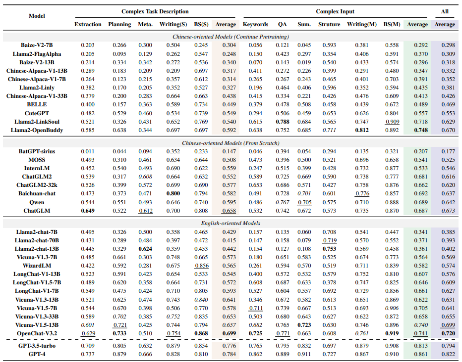
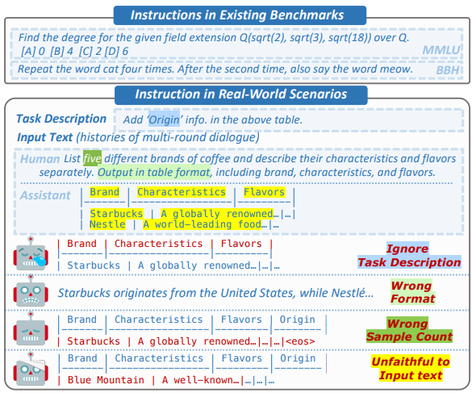
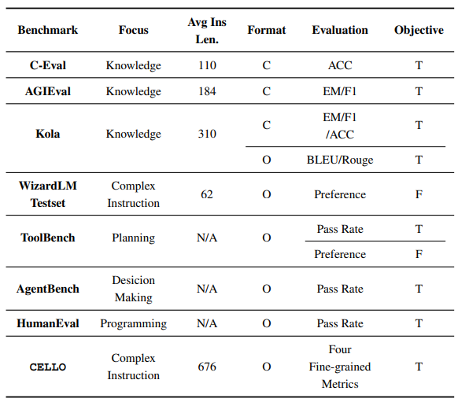
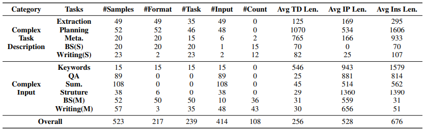

Background
Large language models (LLMs) can understand human instructions, showing their potential for pragmatic applications beyond traditional NLP tasks.
However, they still struggle with complex instructions, which can be either complex task descriptions that require multiple tasks and constraints, or complex input that contains long context, noise, heterogeneous information and multi-turn format.
Due to these features, LLMs often ignore semantic constraints from task descriptions, generate incorrect formats, violate length or sample count constraints, and be unfaithful to the input text.
Existing benchmarks are insufficient to assess LLMs' ability to understand complex instructions, as they are close-ended and simple.
To bridge this gap, we propose CELLO, a benchmark for evaluating LLMs’ ability to follow complex instructions systematically. We design eight features for complex instructions and construct a comprehensive evaluation
dataset from real-world scenarios. We also establish four criteria and develop corresponding metrics, as current ones are
inadequate, biased or too strict and coarse-grained. We compare the performance of representative Chinese-oriented and
English-oriented models in following complex instructions
through extensive experiments.
Our contributions
Our contributions are mainly four-fold:

Table 1: The performance of models on different tasks. Detailed information of each model is provided in the Appendix. The bold, underlined,
and italicized denote the first, second, and third rankings, respectively.
- To the best of our knowledge, we are the first to systematically investigate the ability of LLMs to follow complex instructions. We propose a comprehensive set of features for complex instructions, facilitating both dataset construction and evaluation criteria design.
- We construct a complex instruction dataset from realworld scenarios, containing 523 samples encompassing nine tasks, effectively covering our specified features. Specifically, we propose a two-stage framework for constructing the evaluation dataset for LLM’s complex instruction understanding.
- We design four evaluation criteria and their automatic metrics for assessing LLMs’ ability to follow complex instructions in a comprehensive and discriminative way.
- We compare 19 representative Chinese-oriented models and 15 representative English-oriented models’ performance on our benchmark.
Image Gallery

Figure 1: Existing benchmarks generally contain simple and common instructions.
However, the complex instructions in real-world scenarios are a composition of multiple features, such as constraints on the output format, number of output samples,
key elements of the output, and heterogeneity of input texts in the given example. The understanding of complex instructions poses challenges to current models.

Table 2: Statistics of existing benchmarks. Avg Ins denotes the average word numbers in instructions. C and O denotes the Closeended and Open-ended respectively.
Preference refers to evaluation via GPT4. Objective represents whether the evaluation metrics are objective (T) or subjective (F).

Table 3: The statistics of our benchmark. For each task, #Format, #Task, #Input, #Count denote the number of samples covering the criteria
Answer format, Task-prescribed phrases, Input-dependent query, and Count limit respectively. Avg TD/IP/Ins Len. denote the average word
number of task description, input text and instruction respectively. Meta., BS, SUM. denote the Meta-prompt, Brainstorming, Summarization
task respectively. (S) and (M) represent single-round and multi-round.